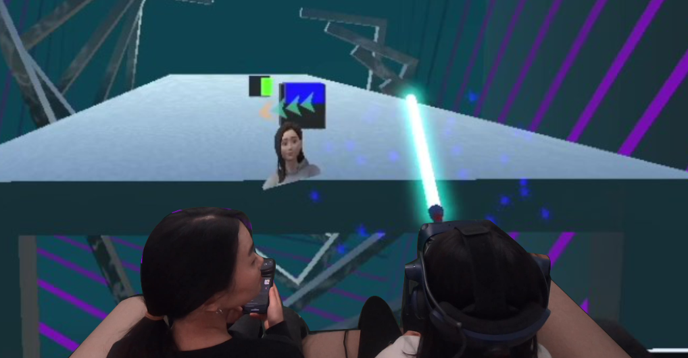

SeatmateVR: Proxemic Cues for Close Bystander-Awareness in Virtual Reality

Authors. Jingyi Li, Hyerim Park, Robin Welsch, Sven Mayer, Andreas Butz
Venue. ISS (2023) Full Paper
Type. Full Paper
Materials.
PDF
Abstract. Prior research explored ways to alert virtual reality users of bystanders entering the play area from afar. However, in confined social settings like sharing a couch with seatmates, bystanders’ proxemic cues, such as distance, are limited during interruptions, posing challenges for proxemic-aware systems. To address this, we investigated three visualizations, using a 2D animoji, a fully-rendered avatar, and their combination, to gradually share bystanders’ orientation and location during interruptions. In a user study (N=22), participants played virtual reality games while responding to questions from their seatmates. We found that the avatar preserved game experiences yet did not support the fast identification of seatmates as the animoji did. Instead, users preferred the mixed visualization, where they found the seatmate’s orientation cues instantly in their view and were gradually guided to the person’s actual location. We discuss implications for fine-grained proxemic-aware virtual reality systems to support interaction in constrained social spaces.
Pending publication